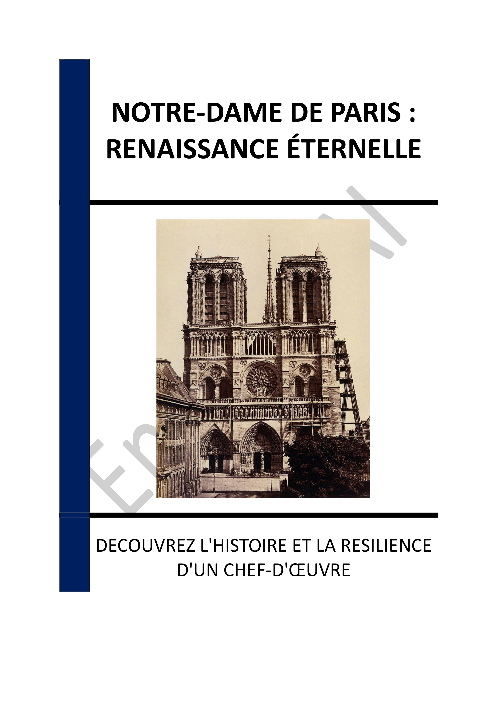

▶
Vitesse
++
+
=
-
--
INTRODUCTION - NOTRE-DAME DE PARIS : UN VOYAGE À TRAVERS L'HISTOIRE ET LA RÉSILIENCE
Chapitre 1 - HISTOIRE DE LA CONSTRUCTION DE NOTRE-DAME DE PARIS
1.1 - Les débuts de la construction en 1163
1.2 - Les innovations architecturales du XIIIe siècle
1.3 - L'achèvement de la structure au XIVe siècle
Chapitre 2 - LES ÉLÉMENTS ARCHITECTURAUX ET ARTISTIQUES MAJEURS
2.1 - Les vitraux et leur symbolisme
2.2 - Les sculptures et gargouilles
2.3 - Les portails et leur iconographie
Chapitre 3 - NOTRE-DAME À TRAVERS LES SIÈCLES : ÉVÉNEMENTS HISTORIQUES MARQUANTS
3.1 - Les couronnements royaux
3.2 - Les périodes de déclin et de restauration
3.3 - Les funérailles nationales
Chapitre 4 - LES RESTAURATIONS DE NOTRE-DAME : VIOLLET-LE-DUC ET AU-DELÀ
4.1 - L'œuvre de Viollet-le-Duc
4.2 - Les défis du XXe siècle
4.3 - Les innovations modernes dans la restauration
Chapitre 5 - L'INCENDIE DU 15 AVRIL 2019 : CAUSES ET CONSÉQUENCES
5.1 - Les circonstances de l'incendie
5.2 - La réaction immédiate
5.3 - L'impact mondial
Chapitre 6 - LA MOBILISATION POUR LA SAUVEGARDE DE NOTRE-DAME
6.1 - Les initiatives gouvernementales
6.2 - Les contributions privées
6.3 - Le rôle des artisans et des experts
Chapitre 7 - LE CHANTIER DE RECONSTRUCTION : DÉFIS TECHNIQUES ET HUMAINS
7.1 - Les techniques traditionnelles et modernes
7.2 - La formation des nouvelles générations
7.3 - Les défis logistiques
Chapitre 8 - LA RÉOUVERTURE DE NOTRE-DAME : CÉLÉBRATIONS ET PERSPECTIVES FUTURES
8.1 - Les festivités de réouverture
8.2 - Les perspectives culturelles et spirituelles
8.3 - L'héritage pour les générations futures
CONCLUSION - NOTRE-DAME DE PARIS : UN HÉRITAGE POUR L'AVENIR
📄 Consulter les annexes du livre
Mentions légales